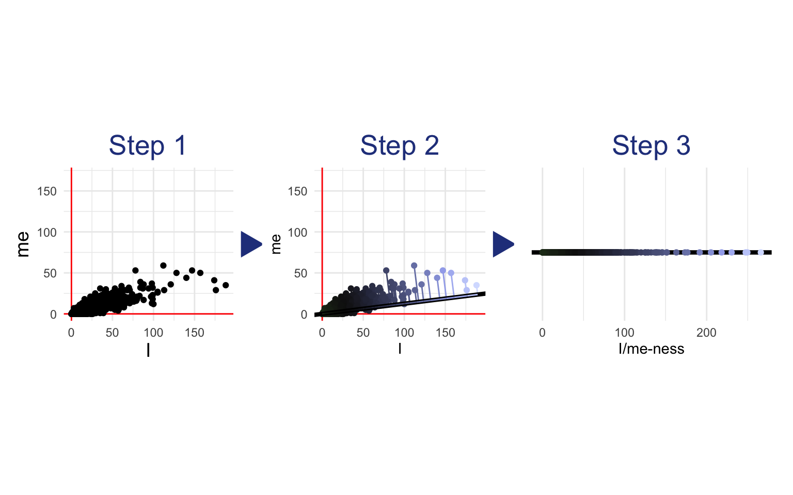

18 Word Embeddings
18.1 The Distributional Hypothesis
This textbook assumes that words have psychologically interesting content. For example, certain words are associated with surprise, while others may be associated with concrete thought. But what does it mean for a word to be associated with an emotion or a cognitive process? How do words come to have any meaning at all? One answer: People associate a word with surprise because they often hear it in surprising situations. Because people associate surprise-related words with surprising situations, they use those words more when they are thinking about surprising situations.
So teaching a computer to recognize surprise-related words should be simple, right? We’ll just tell the computer to look for words that tend to appear in surprising situations! But there’s a problem: Computers don’t get surprised, and they have no idea what a surprising situation is.
According to the distributional hypothesis, our problem is actually not a problem at all. The computer might not know what surprise is, but it doesn’t need to. It doesn’t need to know what anything is—it just needs to know how everything is related to everything else. To do this, it just needs to notice what appears next to what. Similar words appear in similar contexts. For example, consider the following two sentences from the paper that introduced the distributional hypothesis, Harris (1954, emphasis added).
“The formation of new utterances in the language is therefore based on the distributional relations as changeably perceived by the speakers-among the parts of the previously heard utterances.”
“The correlation between language and meaning is much greater when we consider connected discourse.”
Even if we have no idea what “utterances” or “meaning” are, we can learn from these sentences that they must be related somehow, since they both appear together with the word “language.” The more sentences we observe, the more sure we can be about the distributional patterns (i.e. which words tend to have similar words nearby). Words that tend to have very similar words nearby are likely to be similar in meaning, while words that have very different contexts are probably unrelated. Algorithms that learn the meanings of tokens (or at least the relations between their meanings) from these patterns of co-occurrence are called Distributional Semantic Models (DSMs).
A Common Misconception
Two words are NOT considered similar based on whether they appear together often. Words are similar when they tend to appear in similar contexts. For example, “fridge” and “refrigerator” almost never appear together in the same sentence, but they do tend to appear next to similar groupings of other words (e.g. “food,” “cold,” etc.). LSA, the first DSM we will cover, does not fully address this difficulty.
When DSMs learn how different meanings are related, they embed those meanings as vectors in a vector space, like this:
Now that you are comfortable with the concept of a word vector space (Chapter 17), let’s look at how different DSMs embed words and documents into them.
18.2 LSA
Latent Semantic Analysis (LSA) is the simplest sort of DSM.1 You can think of it as the linear regression of the embeddings world. In its standard form, LSA is a simple dimensionality reduction technique—singular-value decomposition (SVD)—applied to the DFM. To illustrate what this means, let’s start with a DFM describing the 862 posts on Reddit’s r/relationship_advice that are featured on the cover of this book. For the sake of illustration, we’ll only consider two features of this DFM: the words “I” and “me”.
#> Document-feature matrix of: 868 documents, 2 features (3.17% sparse) and 7 docvars.
#> features
#> docs i me
#> post1 38 7
#> post2 28 18
#> post3 17 7
#> post4 9 5
#> post5 17 2
#> post6 24 13
#> [ reached max_ndoc ... 862 more documents ]Since we’re only considering two features, we can visualize this DFM in two dimensions:
The terms “I” and “me” are strongly correlated with each other. LSA will recognize this and summarize the I/me-ness of each document with a single number, a combination of the two variables. How does it find this single number?
It finds the line of best fit that goes through the origin (0,0)—the line along which the variables stretch out the most. The direction of that I/me summary line becomes the first dimension of the new embedding space. So each post’s score for this new dimension (i.e. the first number in its embedding vector) represents how far each point is along the direction of the summary line. In the following visualization, each point is projected down onto the summary line. You can see how this squishes the two dimensions of “I” and “me” so that each post can be measured simply by how far it is along the summary line:

In this simple example, we started with two dimensions (“I” and “me”) and reduced them to one. Our new one-dimensional document embeddings measure how far the document is along the line drawn by the LSA.2
If we wanted a second dimension for the embedding space (which would be silly in this example since we only have two dimensions overall), LSA would draw a second line orthogonal (i.e. perpendicular) to the first—the line of best fit to the spread not accounted for by the first line. In real applications, of course, we’ll want to use tens of thousands of features, not two. And the embedding vectors we make might be hundreds of dimensions, not one. Nevertheless, the concept remains the same: Lines through the origin are found that best explain the variance between the documents (note that these lines will all be orthogonal to each other). These lines become the new dimensions: The embedding of a document describes the projection of that document point onto each line.
As part of the process of producing an embedding for each document, LSA also produces an embedding for each word. In the simple example above, the new one-dimensional word embeddings of “I” and “me” measure how much influence each word has on the summary line from Step 2. In other words, the embedding of “me” is the rise of the line along the y axis, and the embedding of “I” is the run of the line along the x axis. This is equivalent to asking how much I/me-ness is in “I” or how much I/me-ness is in “me.” In a real application with higher dimensional embeddings, the concept remains the same: The LSA embedding of a word describes the weights of that word count on each successive line of best fit.3
Performing LSA on a training dataset is made easy with the textmodel_lsa() function from the quanteda.textmodels package. Let’s try it on the full DFM from the r/relationship_advice posts, with all 14,897 features instead of just “I” and “me”.
We’ll use nd = 100 to reduce these 14,897 dimensions into an embedding space of just 100 dimensions. Why 100 dimensions? Choosing the right dimensionality for LSA can be tricky—too many dimensions make the vector space noisy, but too few dimensions can miss important nuances in meaning. Of course, the larger the training dataset, the more dimensions you can use without overfitting. Notice that the process of finding the line of best fit, and then the next best line orthogonal to the first (and then the next best line orthogonal to both, etc.) guarantees that the first dimensions of the LSA vectors will be the most important ones, and the later ones will be more likely to reflect random noise in the data. 100 or 150 dimensions are popular choices for sufficiently large training sets.
library(quanteda.textmodels)
ra_posts_lsa <- ra_posts_dfm |>
textmodel_lsa(nd = 100, margin = "both")Now that the model is set up, we can access the word embeddings with ra_posts_lsa$features and the document embeddings with ra_posts_lsa$docs. For example, the embedding of the word “surprised” would be ra_posts_lsa$features["surprised",] and the embedding of the first post in the dataset would be ra_posts_lsa$docs["post1",]. We could also look for the words closest in meaning to the word “surprised” by measuring their cosine similarity with the “surprised” embedding (see Section 17.1.2).
surprise_embedding <- ra_posts_lsa$features["surprised",]
# cosine similarity function
cos_sim <- function(x, y){
dot <- x %*% y
normx <- sqrt(sum(x^2))
normy <- sqrt(sum(y^2))
as.vector( dot / (normx*normy) )
}
# measure cosine similarity of each vector to "surprised"
surprise_words <- ra_posts_lsa$features |>
as_tibble(rownames = NA) |>
rownames_to_column("token") |>
rowwise() |>
mutate(
surprise = cos_sim(c_across(V1:V100), surprise_embedding)
) |>
ungroup()
# find the ten closest words to "surprised"
surprise_words |>
arrange(desc(surprise)) |>
slice_head(n = 10) |>
pull(token)#> [1] "surprised" "peanut" "besides" "child's" "woah" "brick"
#> [7] "cases" "oil" "insulin" "trolling"Some of these are a bit strange—probably we would get better results with a larger dataset—but “woah” and “trolling” do sound pretty surprising. It seems likely that “peanut”, “cases”, “oil”, and “insulin” were learned from posts about surprising allergy incidents.
We can also apply the embeddings learned on the r/relationship_advice posts to the now-familiar Hippocorpus data, and use the new surprise scores to retest the hypothesis that true autobiographical stories include more surprise than imagined stories.
# reformat hippocorpus_dfm to match ra_posts_dfm
hippocorpus_dfm <- hippocorpus_dfm |>
dfm_match(featnames(ra_posts_dfm))
# apply LSA model to Hippocorpus data
hippocorpus_lsa <- predict(ra_posts_lsa, hippocorpus_dfm)
# measure surprise in Hippocorpus
# (similarity to the word "surprised")
hippocorpus_surprise <- hippocorpus_lsa$docs |>
as.matrix() |>
as_tibble(rownames = NA) |>
rownames_to_column("doc_id") |>
rowwise() |>
mutate(
surprise = cos_sim(c_across(V1:V100), surprise_embedding)
) |>
ungroup()Since cosine similarity can only be between -1 and 1 (Section 17.1.2), we will use beta regression4. This requires us to transform the cosine similarity to range between 0 and 1 before modeling.
# transform cosine similarity to stay between 0 and 1
hippocorpus_surprise <- hippocorpus_surprise |>
mutate(surprise = surprise/2 + 1/2)
# rejoin docvars
hippocorpus_surprise <- hippocorpus_surprise |>
bind_cols(docvars(hippocorpus_corp))
# beta regression
surprise_mod_lsa <- betareg::betareg(
surprise ~ memType,
hippocorpus_surprise,
)
summary(surprise_mod_lsa)#>
#> Call:
#> betareg::betareg(formula = surprise ~ memType, data = hippocorpus_surprise)
#>
#> Standardized weighted residuals 2:
#> Min 1Q Median 3Q Max
#> -4.0907 -0.6880 -0.0095 0.6722 3.5857
#>
#> Coefficients (mean model with logit link):
#> Estimate Std. Error z value Pr(>|z|)
#> (Intercept) 0.078968 0.003483 22.673 < 2e-16 ***
#> memTyperecalled 0.023277 0.004917 4.734 2.20e-06 ***
#> memTyperetold 0.030599 0.006125 4.996 5.85e-07 ***
#>
#> Phi coefficients (precision model with identity link):
#> Estimate Std. Error z value Pr(>|z|)
#> (phi) 118.824 2.021 58.79 <2e-16 ***
#> ---
#> Signif. codes: 0 '***' 0.001 '**' 0.01 '*' 0.05 '.' 0.1 ' ' 1
#>
#> Type of estimator: ML (maximum likelihood)
#> Log-likelihood: 1.144e+04 on 4 Df
#> Pseudo R-squared: 0.004906
#> Number of iterations: 9 (BFGS) + 2 (Fisher scoring)We found a significant difference between recalled and imagined stories, such that recalled stories had more surprise (p < .001) and a significant difference between retold and imagined stories such that retold stories had more surprise (p < .001).
18.2.1 Variations on LSA
Even in the simplified example shown above using word counts for only “I” and “me”, it is easy to see some problems with the standard LSA procedure. First, there is no guarantee that the line of best fit for describing the relationships between word counts will go through the origin. How can we fix this?
Standard LSA is singular-value decomposition (SVD) applied to a DFM. If you are familiar with principle components analysis (PCA), the explanation of this process above may have sounded familiar. Indeed, PCA is almost the same as SVD, but with one added step at the beginning: centering all the variables at zero. This centering can make a big difference when the line of best fit to your data does not go through the origin. To center a DFM before performing LSA, you can use this function:
Another potential problem is that standard LSA gives more weight to common tokens, since common tokens tend to have more variance in their counts (remember that the line of best fit is the one along which the variables spread out the most). This can be remedied by normalizing the DFM before performing the LSA (i.e. transforming all of the counts to z-scores). To do this, you can use this function on your DFM:
To gain an appreciation for these variations, let’s see what LSA looks like on our “I” and “me” features with centering and normalization:
Other problems with LSA are familiar from Chapter 16: For example, LSA can only model linear relationships, but the relationships between word counts are not necessarily linear. In fact, the scatterplots above make it fairly clear that the relationship between the number of “I”s and the number of “we”s in a Reddit post is curved. Similarly, LSA (and SVD in general) works best with normally distributed data (see Rosario, 2001), and word counts are anything but normally distributed. Also, standard LSA is sensitive to text length and may not generalize well to a dataset with texts that are much shorter or much longer than the training set. All of these problems can be remedied using the methods discussed in Chapter 16. For example, one might calculate TF-IDF scores (Section 16.5) before performing LSA to emphasize topical content. Alternatively, one might perform smoothing (Section 16.6) followed by relative tokenization (Section 16.3) and the Anscombe transform (Section 16.4) to standardize word counts across text length and get them closer to a normal distribution. The original designers of LSA advocated for a transformation similar to TF-IDF which they justified in cognitive terms5 (Landauer & Dumais, 1997).
Another difficulty with LSA is that it relies on documents to define the context of words. This works well if each document only deals with one topic (or emotion), but not so well with documents that include multiple topics. One solution to this (if you have reasonably long texts) is to use a moving context window: Extract all segments of, say, 10 words, and use each one as a separate document for training the LSA. This can be accomplished in R by applying the following code to your texts before tokenization:
example_texts <- c(
"One solution to this is to use a moving context window",
"extracting all segments of, say, 10 words, and using each one as a separate document for training the LSA."
)
# function to split text with moving window
str_split_window <- function(string, window_size){
nwords <- str_count(string, " ") + 1L
out <- lapply(1:length(string), function(s) {
sapply((window_size + 1L):nwords[s], function(i) word(string[s], i-window_size, i))
})
unlist(out)
}
str_split_window(example_texts, 10)#> [1] "One solution to this is to use a moving context window"
#> [2] "extracting all segments of, say, 10 words, and using each one"
#> [3] "all segments of, say, 10 words, and using each one as"
#> [4] "segments of, say, 10 words, and using each one as a"
#> [5] "of, say, 10 words, and using each one as a separate"
#> [6] "say, 10 words, and using each one as a separate document"
#> [7] "10 words, and using each one as a separate document for"
#> [8] "words, and using each one as a separate document for training"
#> [9] "and using each one as a separate document for training the"
#> [10] "using each one as a separate document for training the LSA."An example of LSA in research: Moss et al. (2006) asked mechanical engineering students to write brief descriptions of devices that were presented in diagrams. They then performed LSA on these descriptions, reducing them to a 100 dimensional embedding space. They then found the embeddings of an existing dictionary of function-related words (e.g. “actuate”, “adjust”, “control”), and averaged them to produce a vector representing the function of devices. Finally, they computed cosine similarity between this vector and that of each document. They found that fourth-year engineering students used more functional language than first-year students.
18.3 Advanced Word Embeddings
LSA is a good baseline for word embeddings, but as we have seen, it suffers from many of the familiar problems associated with word counts: difficulties with nonlinear relationships, non-normal distributions, etc.
LSA also suffers from an even more fundamental problem. Recall the warning from the beginning of this chapter: Two words are NOT considered similar based on whether they appear together often. Words are similar when they tend to appear in similar contexts. LSA is fundamentally based on global patterns of covariance in the DFM. Because synonyms rarely appear together in the same document (i.e. their counts are likely to be negatively correlated), their embeddings will be further apart in the vector space than they really should be. More modern techniques for embedding words fix this problem as well as the others with model architectures that are carefully tailored for capturing meaning.
18.3.1 Word2vec
Word2vec was first introduced by Mikolov, Chen, et al. (2013) and was refined by Mikolov, Sutskever, et al. (2013). They proposed a few variations on a simple neural network6 that learns the relationships between words and contexts. Here we describe the most commonly used variation—continuous Skip-gram with negative sampling.7 Imagine training the model on the following sentence:
Coding can be frustrating.
Our Skip-gram training dataset would have one column for the input word, and another column for words from its immediate context. It is called “continuous” because it slides a context window along the training text (Section 18.2.1), considering each word as input, and the words immediately around it (e.g. 10 before and 10 after) as context, like this:
#> # A tibble: 12 × 2
#> word context
#> <chr> <chr>
#> 1 coding can
#> 2 coding be
#> 3 coding frustrating
#> 4 can coding
#> 5 can be
#> 6 can frustrating
#> 7 be coding
#> 8 be can
#> 9 be frustrating
#> 10 frustrating coding
#> 11 frustrating can
#> 12 frustrating beThe negative sampling method adds more rows to the training set, this time from words and contexts that do not go together, drawn at random from other parts of the corpus. A third column indicates whether the pair of words are really neighbors or not:
#> # A tibble: 12 × 3
#> word context neighbors
#> <chr> <chr> <dbl>
#> 1 coding can 1
#> 2 coding be 1
#> 3 coding frustrating 1
#> 4 can coding 1
#> 5 can be 1
#> 6 can frustrating 1
#> 7 coding happy 0
#> 8 coding olive 0
#> 9 coding jump 0
#> 10 can happy 0
#> 11 can olive 0
#> 12 can jump 0The word2vec model takes the first two columns as input and tries to predict whether the two words are neighbors or not. It does this by learning two separate sets of embeddings: word embeddings and context embeddings.
For each row of the training set, the model looks up the embedding for the target word and the embedding for the context word, and computes the dot product between the two vectors. The dot product is closely related to the cosine similarity, which we discussed in Section 17.1.2—it measures how similar the two embeddings are. If the dot product is large (i.e. the word embedding and the context embedding are very similar), the model predicts that the two words are likely to be real neighbors. If the dot product is small, the model predicts that the two words were probably sampled at random.8 During training, the model learns which word embeddings and context embeddings will do best at this binary prediction task.
Notice that word2vec (and fastText and GloVe) give each word two embeddings: one for when the word is the target and another for when it is the context (Goldberg & Levy, 2014). This may seem strange, but it actually solves two important problems with LSA:
- A Nuance of the Distributional Hypothesis. Recall the case of “fridge” and “refrigerator”, which almost never appear together in the same sentence, but do tend to appear next to similar groupings of other words. Because LSA is based directly on broad patterns of covariance in word frequencies, it will pick up on the fact that “fridge” and “refrigerator” are negatively correlated and push them further apart than they should be. Word2vec, on the other hand, can learn a context embedding for “refrigerator” that is not so close to the word embedding for “fridge”, even when the word embeddings of the two words are very close. This allows word2vec to recognize that “refrigerator” and “fridge” tend to appear in similar contexts, but are unlikely to appear together. In this way, word2vec is truer to the distributional hypothesis than LSA.
- Associative Asymmetry. The cosine similarity between two word embeddings gives the best estimate of conceptual similarity (Torabi Asr et al., 2018). This is because conceptual similarity is not the same as association in language (or in the mind). In fact, psycholinguists have long known that human associations between two words are asymmetric. For example, people prompted with “leopard” are much more likely to think of “tiger” than people prompted with “tiger” are to think of “leopard” (Tversky & Gati, 1982). These sorts of associative connections are closely tied to probabilities of co-occurrence in language and are therefore much better represented by the cosine similarity (or even the dot product) between a word embedding and a context embedding (Torabi Asr et al., 2018). Thus the association between “leopard” and “tiger” would be represented by the similarity between the word embedding of “leopard” and the context embedding of “tiger”, allowing for the asymmetry observed in mental associations.9 Since LSA only produces one embedding per word, it cannot capture this asymmetry.
Word2vec was revolutionary when it came out. The main reason for this is the efficiency of the training process. This efficiency means that the model can be trained on massive datasets. Larger and more diverse datasets mean more reliable embeddings. A few pretrained models can be easily downloaded from the Internet (e.g. from here or here). Because these models are trained on very large datasets and are already known to perform well, it almost never makes sense to train your own word2vec from scratch.
Once you’ve downloaded a pretrained model (generally as a .bin file), you can open it in R with the word2vec package. Here we’ll be using a model trained on the entirety of Google news, downloaded from here, which uses 300-dimensional embeddings.
library(word2vec)
# model file path
word2vec_mod <- "data/GoogleNews-vectors-negative300.bin"
# open model
word2vec_mod <- read.word2vec(file = word2vec_mod, normalize = TRUE)To find embeddings of specific words, use predict(word2vec_mod, c("word1", "word2"), type = "embedding"). To get embeddings for full documents, average the embeddings of the words in the document. Here we provide a function to compute document embeddings directly from a DFM.
textstat_embedding <- function(dfm, model){
feats <- featnames(dfm)
# find word embeddings
feat_embeddings <- predict(model, feats, type = "embedding")
feat_embeddings[is.na(feat_embeddings)] <- 0
# average word embeddings of each document
out_mat <- (dfm %*% feat_embeddings)/ntoken(dfm)
colnames(out_mat) <- paste0("V", 1:ncol(out_mat))
as_tibble(as.matrix(out_mat), rownames = "doc_id")
}Let’s use word2vec embeddings and cosine similarity to reanalyze the Hippocorpus data.
# embedding of the word "surprised"
surprise_embedding <- predict(word2vec_mod, "surprised", type = "embedding") |>
as.vector()
# document embeddings
hippocorpus_word2vec <- hippocorpus_dfm |>
textstat_embedding(word2vec_mod)
# score documents by surprise
hippocorpus_surprise_word2vec <- hippocorpus_word2vec |>
rowwise() |>
mutate(
surprise = cos_sim(c_across(V1:V300), surprise_embedding),
# transform cosine similarity to stay between 0 and 1
surprise = surprise/2 + 1/2
) |>
ungroup() |>
select(-c(V1:V300))
# rejoin docvars
hippocorpus_surprise_word2vec <- hippocorpus_surprise_word2vec |>
bind_cols(docvars(hippocorpus_corp))
# beta regression
surprise_mod_word2vec <- betareg::betareg(
surprise ~ memType,
hippocorpus_surprise_word2vec
)
summary(surprise_mod_word2vec)#>
#> Call:
#> betareg::betareg(formula = surprise ~ memType, data = hippocorpus_surprise_word2vec)
#>
#> Standardized weighted residuals 2:
#> Min 1Q Median 3Q Max
#> -5.5628 -0.6548 0.0385 0.6634 3.9802
#>
#> Coefficients (mean model with logit link):
#> Estimate Std. Error z value Pr(>|z|)
#> (Intercept) 0.6532469 0.0009524 685.890 < 2e-16 ***
#> memTyperecalled -0.0101895 0.0013430 -7.587 3.27e-14 ***
#> memTyperetold -0.0077017 0.0016726 -4.605 4.13e-06 ***
#>
#> Phi coefficients (precision model with identity link):
#> Estimate Std. Error z value Pr(>|z|)
#> (phi) 1775.78 30.33 58.56 <2e-16 ***
#> ---
#> Signif. codes: 0 '***' 0.001 '**' 0.01 '*' 0.05 '.' 0.1 ' ' 1
#>
#> Type of estimator: ML (maximum likelihood)
#> Log-likelihood: 2.102e+04 on 4 Df
#> Pseudo R-squared: 0.00875
#> Number of iterations: 21 (BFGS) + 3 (Fisher scoring)Once again we found a significant difference between recalled and imagined stories, this time in the opposite direction (though see Chapter 20 for some ways in which this may be misleading).
An example of word2vec in research: Chatterjee et al. (2023) used word2vec to study the phenomenon of nominative determinism—the purported tendency to chose a profession or city with a first letter that matches the first letter of one’s name (e.g. someone named Louis might choose to be a language researcher). They first used a word2vec model trained on Google News to obtain embeddings for 3,410 first names, 508 professions, and 14,856 US cities. They then averaged the embeddings of all names/professions/cities that begin with the same letter to obtain a vector representing names that begin with the letter “A”, a vector representing professions that begin with the letter “A”, etc. Using cosine similarity, they found that same-letter names and professions (e.g. Albert and Actuary) tend to be more similar than different-letter names and professions (e.g. Albert and Dentist), even when controlling for gender, ethnicity, and frequency. They found a similar pattern for names and cities.
18.3.2 GloVe
Word2vec produces spectacularly rich and reliable vector embeddings, but their reliance on randomly sampled pairs of words and contexts makes them somewhat noisy and overly sensitive to frequent tokens. The developers of word2vec managed to fix these problems by strategically filtering the training dataset, but Pennington et al. (2014) came up with a more elegant solution: Global Vectors (GloVe) is designed on the same principles of word2vec, but it is computed from global patterns of co-occurrence rather than individual examples.10
Even though GloVe uses a different method of training, the embeddings it generates are very similar to those generated by word2vec. Because GloVe embeddings are so similar to word2vec embeddings, we will not go into detail here about the way the GloVe algorithm works. Nevertheless, GloVe does have one very important advantage over word2vec: Better pretrained models are available online. Whereas the most easily available word2vec model is trained on news, the GloVe website offers models trained on social media (glove.twitter.27B.zip) and on large portions of the Internet (Common Crawl). These models generalize better to social media texts (since they were trained on similar texts) and are likely to have richer representations of emotional or social content, since more examples of that content appear on social media than in the news or on Wikipedia.11
Since the pretrained GloVe models are available in .txt format, you don’t need a wrapper package to use them in R. Simply download the pretrained model, input the path to the file as path_to_glove, and run the following code:
path_to_glove <- "data/glove/glove.twitter.27B.100d.txt"
dimensions <- as.numeric(str_extract(path_to_glove, "[:digit:]+(?=d\\.txt)"))
# matrix with token embeddings
glove_pretrained <- data.table::fread(
path_to_glove,
quote = "",
col.names = c("token", paste0("dim_", 1:dimensions))
) |>
distinct(token, .keep_all = TRUE) |>
remove_rownames() |>
column_to_rownames("token") |>
as.matrix()
# update class to "embeddings" (required for `predict.embeddings` function)
class(glove_pretrained) <- "embeddings"
# function to retrieve embeddings
# `object`: an "embeddings" object (matrix with character rownames)
# `newdata`: a character vector of tokens
# `type`: 'embedding' gives the embeddings of newdata.
# 'nearest' gives nearest embeddings by cosine similarity
# (requires the cos_sim function)
# `top_n`: for `type = 'nearest'`, how many nearest neighbors to output?
predict.embeddings <- function(object, newdata,
type = c("embedding", "nearest"),
top_n = 10L){
embeddings <- as.matrix(object)
embeddings <- rbind(
embeddings,
matrix(ncol = ncol(embeddings), dimnames = list("NOT_IN_DICT"))
)
newdata[!(newdata %in% rownames(embeddings))] <- "NOT_IN_DICT"
if (type == "embedding") {
embeddings[newdata,]
}else{
if(length(newdata) > 1){
target <- as.vector(apply(embeddings[newdata,], 2, mean))
}else{
target <- as.vector(embeddings[newdata,])
}
sims <- apply(object, 1, cos_sim, target)
embeddings <- embeddings[rev(order(sims)),]
head(embeddings, top_n)
}
}You can then proceed just as we did for word2vec, using the textstat_embedding() function provided in that section to compute document embeddings directly from a DFM.
18.3.2.1 Training a Custom GloVe Model
Since excellent pretrained GloVe embeddings are available online, it rarely makes sense to train your own model. Nevertheless, GloVe’s elegant training procedure makes for easy integration with Quanteda. A tutorial on training a custom GloVe model in Quanteda can be found here.
Why might you want to train a custom word embeddings model? Maybe you are interested in quantifying differences in individual word use between multiple large groups of text. For example, you might train a GloVe model on texts written by conservatives and another on texts written by liberals, and demonstrate that the word “skirt” is closer to the word “woman” in conservative language than it is in liberal language.
18.3.3 FastText
FastText (Bojanowski et al., 2017) is a specialized version of word2vec, designed to work with languages in which words take different forms depending on their grammatical place. Rather than learning a word embedding and a context embedding for each full word (e.g. “quantify” and “quantification” each get their own embedding), fastText learns a vector for each shingle within a word (see Section 13.1.5). For example, “quantify” might be broken up into “quant”, “uanti”, “antif”, and “ntify”. But it doesn’t treat each shingle as its own word. Rather, it trains on words just like word2vec and GloVe, but makes sure that the embedding of a word is equal to the sum of all of the shingle vectors inside it.
This approach is mostly unnecessary for English, where words are generally spelled the same wherever they appear. But for more morphologically rich languages like Hebrew, Arabic, French, or Finnish, fastText works much better than word2vec and GloVe. This is because there might not be enough data for word2vec and GloVe to learn reliable representations of every form of every word, especially rare forms. FastText, on the other hand, can focus on the important subcomponents of the words that stay the same across different forms. This way it can learn rich representations even of rare forms of a word that don’t appear in the training dataset (e.g. it could quantify the meaning of מחשבותייך even if it were only trained on מחשבה, מחשבות, חבר, and חברייך).
After downloading a pretrained model from this page (Grave et al., 2018), you can use fastText in R through the fastTextR package. Conveniently, fastTextR includes a dedicated function for obtaining full text embeddings, ft_sentence_vectors().
library(fastTextR)
# example texts
heb_words <- c("מחשבותייך", "מחשבה")
heb_texts <- c("הדבור מיחד את האדם מן החי, הדומם והצומח, הלשון היא – נפש חיה – רוח ממללה", "לשון היא המבדלת בין אומה אחת לחברתה, והיא החוט, שעליו נחרזות תמורות הנפש הרבות")
# load pretrained model from file
heb_model <- ft_load("data/cc.he.300.bin")
# get word embeddings
word_vecs <- ft_word_vectors(heb_model, heb_words)
# get text embeddings
text_vecs <- ft_sentence_vectors(heb_model, heb_texts)18.3.4 Interpreting Advanced Word Embeddings
Advanced word embedding algorithms like word2vec, GloVe, and fastText use the dot product of embeddings to measure how likely two words are to appear together. The dot product is the same as cosine similarity, except that it gets larger as the vectors get farther away from the origin (i.e. cosine similarity is the dot product of two normalized vectors).
Recall that in models like word2vec and GloVe, the dot product corresponds to the probability that two words occur together. Vectors that are farther away from the origin will result in very positive or very negative dot products, making the model more confident in the pair of words either being neighbors or not. This means that the distance of a word embedding from the origin (also called the norm or magnitude) is proportional to the informativeness of the word (Oyama et al., 2023; Schakel & Wilson, 2015). For example, the word “the” has a very low magnitude because it does not indicate a specific context, while the word “psychology” has a very high magnitude because its use is associated with a very specific context. Therefore, the magnitude of the embedding measures how representative it is of certain contexts as opposed to others, similar to averaging the TF-IDF of a word across a corpus (Section 16.5).
This is the reason why an accurate embedding of a full text can be obtained by averaging the embeddings of each of its words. You might think that averaging word embeddings will lead to overvaluing common words, like “the” and “I”, which appear more frequently but are not very informative about the text’s meaning. Don’t worry, because the magnitude of a word embedding is smaller for common words, which means that common words have less impact on the average (Ethayarajh et al., 2019).
Once average embeddings are computed, we almost always use cosine similarity to assess the relationships between embeddings. The cosine similarity measures only the meanings of the two embeddings, while ignoring how specific they are to those meanings. If the specificity of texts to your construct of interest is important to your analysis, consider using the dot product instead of cosine similarity. Despite its unpopularity as a similarity metric, the dot product may sometimes be optimal for analyzing texts with decontextualized embeddings (?sec-ccr-validation). For more applications of word embedding magnitude, see Chapter 20 and Chapter 22.
Alammar, J. (2019). The illustrated Word2vec. In Jay Alammar – Visualizing machine learning one concept at a time. http://jalammar.github.io/illustrated-word2vec/
Bojanowski, P., Grave, E., Joulin, A., & Mikolov, T. (2017). Enriching word vectors with subword information. https://arxiv.org/abs/1607.04606
Chatterjee, P., Mishra, H., & Mishra, A. (2023). Does the first letter of one’s name affect life decisions? A natural language processing examination of nominative determinism. Journal of Personality and Social Psychology, 125. https://doi.org/10.1037/pspa0000347
Deerwester, S., Dumais, S. T., Furnas, G. W., Landauer, T. K., & Harshman, R. A. (1990). Indexing by latent semantic analysis. Journal of the Association for Information Science and Technology, 41(6), 391–407. https://doi.org/10.1002/(SICI)1097-4571(199009)41:6<391::AID-ASI1>3.0.CO;2-9
Ethayarajh, K., Duvenaud, D., & Hirst, G. (2019). Towards understanding linear word analogies. https://arxiv.org/abs/1810.04882
Goldberg, Y., & Levy, O. (2014). word2vec explained: Deriving mikolov et al.’s negative-sampling word-embedding method. https://arxiv.org/abs/1402.3722
Grave, E., Bojanowski, P., Gupta, P., Joulin, A., & Mikolov, T. (2018). Learning word vectors for 157 languages. Proceedings of the International Conference on Language Resources and Evaluation (LREC 2018).
Harris, Z. S. (1954). Distributional Structure. WORD, 10(2-3), 146–162. https://doi.org/10.1080/00437956.1954.11659520
Kauf, C., Tuckute, G., Levy, R., Andreas, J., & Fedorenko, E. (2024). Lexical-Semantic Content, Not Syntactic Structure, Is the Main Contributor to ANN-Brain Similarity of fMRI Responses in the Language Network. Neurobiology of Language, 5(1), 7–42. https://doi.org/10.1162/nol_a_00116
Knief, U., & Forstmeier, W. (2021). Violating the normality assumption may be the lesser of two evils. Behavior Research Methods, 53. https://doi.org/10.3758/s13428-021-01587-5
Landauer, T. K., & Dumais, S. T. (1997). A solution to plato’s problem: The latent semantic analysis theory of acquisition, induction, and representation of knowledge. Psychological Review, 104, 211–240. https://api.semanticscholar.org/CorpusID:1144461
Mikolov, T., Chen, K., Corrado, G., & Dean, J. (2013). Efficient estimation of word representations in vector space. https://arxiv.org/abs/1301.3781
Mikolov, T., Sutskever, I., Chen, K., Corrado, G., & Dean, J. (2013). Distributed representations of words and phrases and their compositionality. https://arxiv.org/abs/1310.4546
Moss, J., Kotovsky, K., & Cagan, J. (2006). The Role of Functionality in the Mental Representations of Engineering Students: Some Differences in the Early Stages of Expertise. Cognitive Science, 30(1), 65–93. https://doi.org/10.1207/s15516709cog0000_45
Oyama, M., Yokoi, S., & Shimodaira, H. (2023). Norm of word embedding encodes information gain. https://arxiv.org/abs/2212.09663
Pennington, J., Socher, R., & Manning, C. D. (2014). GloVe: Global vectors for word representation. Empirical Methods in Natural Language Processing (EMNLP), 1532–1543. http://www.aclweb.org/anthology/D14-1162
Rosario, B. (2001). Latent Semantic Indexing : An Overview 1 Latent Semantic Indexing : An overview INFOSYS 240 Spring 2000 Final Paper. https://www.semanticscholar.org/paper/Latent-Semantic-Indexing-%3A-An-Overview-1-Latent-%3A-Rosario/95981f057cb76a24329fcf2b572f75d8c2b1613e#citing-papers
Schakel, A. M. J., & Wilson, B. J. (2015). Measuring word significance using distributed representations of words. https://arxiv.org/abs/1508.02297
Torabi Asr, F., Zinkov, R., & Jones, M. (2018). Querying word embeddings for similarity and relatedness. In M. Walker, H. Ji, & A. Stent (Eds.), Proceedings of the 2018 conference of the north American chapter of the association for computational linguistics: Human language technologies, volume 1 (long papers) (pp. 675–684). Association for Computational Linguistics. https://doi.org/10.18653/v1/N18-1062
Tversky, A., & Gati, I. (1982). Similarity, separability, and the triangle inequality. Psychological Review, 89, 123–154. https://doi.org/10.1037/0033-295X.89.2.123
The scale in Step 3 above has been modified for clarity. In reality, the values of LSA embeddings may be scaled down or flipped relative to the original word counts. Since reasoning in vector space relies on relative distances and angles, this change of scale has no effect on measurements.↩︎
LSA document embeddings are sometimes explained as the sum of LSA word embeddings for each document. Mathematically, this is equivalent to the explanation provided here.↩︎
Many researchers use linear regression in situations like this, despite the violation of the linearity assumption. Generally this is fine, since linear regression is surprisingly robust (Knief & Forstmeier, 2021).↩︎
Cognitive scientists have long debated the extent to which the way DSMs learn meaning is similar to the way humans learn meaning. For an interesting recent paper in this field, see Kauf et al. (2024).↩︎
Some people think word2vec is too simple to be called a neural network. If you are one of these people, you are welcome to think of word2vec as a fancy sort of logistic regression instead.↩︎
To learn why models like word2vec use dot products instead of cosine similarity, see Section 18.3.4 below.↩︎
To the best of our knowledge, pretrained context embeddings are not available online. So if you are interested in associative (rather than conceptual) relationships between words, we recommend training your own model (see Section 18.3.2.1).↩︎
GloVe is built on the same metric that we used in Chapter 15: relative frequency ratios. Rather than comparing two word frequencies in two groups of texts as we did in that chapter, it instead compares co-occurrence with one word to co-occurrence with another.↩︎
Another notable difference between GloVe and word2vec is that the GLoVe averages the word embeddings and context embeddings rather than using only the word embeddings as word2vec does. This makes GloVe embeddings slightly better at representing overall meaning, but may blur the distinction between conceptual similarity and mental/linguistic association (Torabi Asr et al., 2018).↩︎